OpenSCAD is an open source 3D modelling environment. Many of these exist, but what makes OpenSCAD different is rather than creating models interactively using point and click, you write programs to generate them.
Writing programs to generate 3D models can sound like hard work, but there are some scenarios where it makes a lot of sense, most notably when you wish to auto-generate a model based on some parameters.
This tutorial will follow the process of making a script that can auto generate you toy-bricks of various sizes.
You should know the basics of programming before following this tutorial. It doesn't really matter which language you're familiar with, but you should know what variables, functions and for loops are.
Follow the instructions on the OpenSCAD website to download and install. Pre-built binaries are available for Windows, OS X and Ubuntu. For other platforms, you can build from source.
Once downloaded and installed, you can run by clicking the OpenSCAD icon, or typing openscad from the command line.
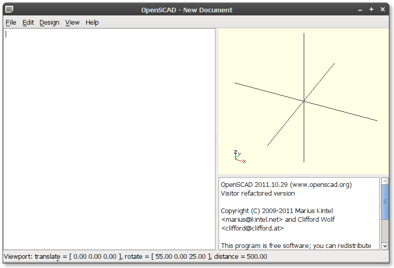
The environment has 3 panes:
OpenSCAD is installed with an excellent set of examples to explore. Explore them later, though.
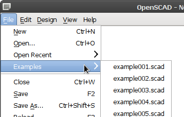
Let's open an example. Example 4 is a nice simple one to start with: File -> Examples -> example004.scad.
You'll see the code on the left hand side. Now let's compile and render the code: Design -> Compile and Render (or hit F6).
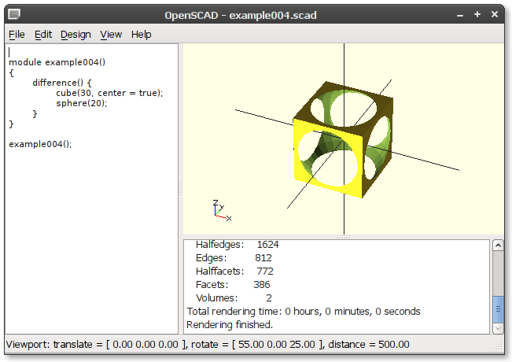
You can alter your view of the model using the mouse:
Okay, you've got the basics of the environment. It's pretty minimal (which I like). From here on, it's code all the way...
OpenSCAD has 2 primary ways of modelling:
This tutorial only covers Constructive Solid Geometry - as that's the interesting part.
Wikipedia has a great explanation on Constructive Solid Geometry (which I'll call CSG from here on). This is a not a process unique to OpenSCAD - in fact, many of the top industry 3D CAD tools use this approach.
In a nutshell, CSG is the process of taking some primitive shapes (e.g. cubes, spheres, cylinders) and applying boolean operations on them to create new shapes.
Think of Venn diagrams - but for areas of 3D space.
You could make a new shape using the UNION of two shapes (an OR operation):
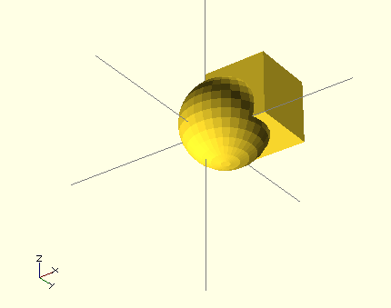
union() {
cube(size=15);
translate([3, 3, 3]) {
sphere(r=10);
}
}
Or you could find the INTERSECTION (an AND operation):
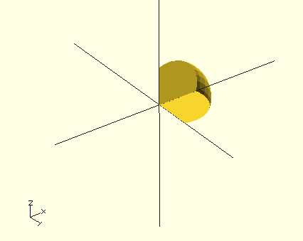
intersection() {
cube(size=15);
translate([3, 3, 3]) {
sphere(r=10);
}
}
Or the DIFFERENCE (a SUBTRACT operation):
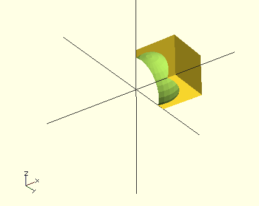
difference() {
cube(size=15);
translate([3, 3, 3]) {
sphere(r=10);
}
}
The result of the DIFFERENCE will depend on the order of the shapes you give it:
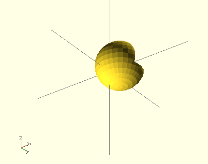
difference() {
translate([3, 3, 3]) {
sphere(r=10);
}
cube(size=15);
}
And that's that.
By now, you've noticed the code snippets. You can paste those into the environment and hit Compile and Render (F6) to render them.
Let's look at what we have used so far...
The sphere() and cube() functions create your basic shapes.
The cube() function takes a size parameter. In this case we are creating a regular cube, but it's also possible to specify the X, Y, and Z sizes independently, e.g. cube(size=[1,4,3]) (this is called a rectangular cuboid).
The sphere() functions takes a r parameter to specify the radius.
Shapes are always started from the origin coordinates [0, 0, 0]. For a cube, one corner resides on the origin, and the other corners protude out. For a sphere, the center is on the origin.
The Primitive Solids section of the OpenSCAD manual lists all the solids available and their parameters. You've seen half of them - the other two are cylinder() and polyhedron()
Transformations allow you to mutate your shapes in various ways. The most common operations are translate() (a.k.a. move), rotate() and scale() (a.k.a. resize), all of which take [X, Y, Z] as a parameter.
The OpenSCAD language allows functions to be nested, for example:
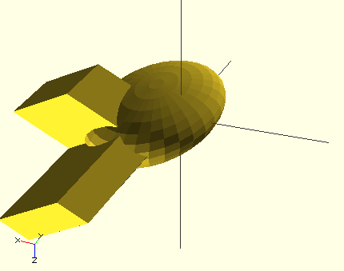
scale([1, 1.8, 0.5]) {
translate([7, 1.1, 1.1]) {
sphere(r=15);
}
rotate([90, 45, 0]) {
cube(size=[10, 20, 30]);
cube(size=[30, 20, 10]);
}
}
Like with most C style programming languages, the squigglies { … } are optional if you only have one nested statement, so you can write statements like scale([1, 1.8, 0.5]) translate([7, 1.1, 1.1]) sphere(r=15);.
Okay, let's do something real. Our toy brick.
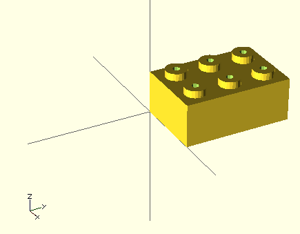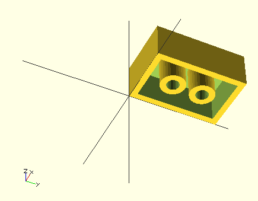
First some vocabulary. I'll use these term:
To start off, we need some dimensions. We'll be using these a lot, so we'll assign these. These dimensions are compatible with many common toy brick systems.
// All dimensions are in mm. Changes these to be compatible with different brick systems. unit_width = 5; // width and height unit_height = 6; wall_thickness = 1; stud_height = 1;
In addition, we need to figure out the radius of the studs and the tubes. We could measure these, but it's also possible to calculate them based on the variables above. The advantage of calculating them is we can easily alter the dimensions above to work with other brick systems.
First the radius of the stud. Well we know it needs to fit in a unit, but account for the wall thickness. Therefore:
stud_radius = unit_length / 2 - wall_thickness;
The tube radius is a bit trickier. Here's what it should be:
TODO: Show diagram
To calculate it you can use Pythagoras' theorum. OpenSCAD includes a bunch of mathematical functions.
tube_radius = sqrt(pow(unit_length / 2, 2) * 2) - stud_radius;
First, we're going to create the brick. To start with, let's create a 2 × 3 brick. We'll define these:
x_units = 2; y_units = 3;
And now a brick shape:
// Solid brick cube([ x_units * unit_width, y_units * unit_width, unit_height]);
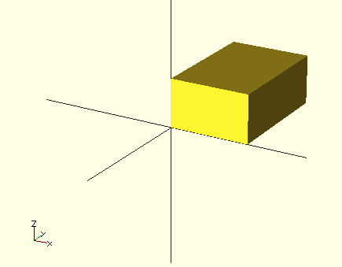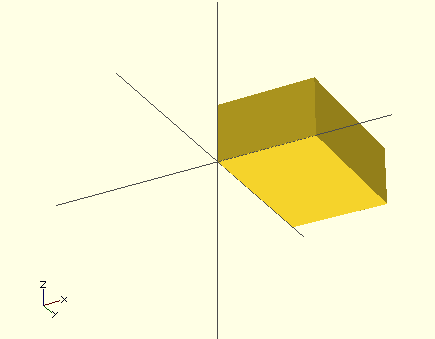
Now we need to hollow it out. For this we can create another brick, that's slightly smaller (twice the wall size), and then use the difference operation to subtract it from the original.
difference() {
// Solid brick
cube([
x_units * unit_width,
y_units * unit_width,
unit_height]);
// Hollow brick
cube([
x_units * unit_width - wall_thickness * 2,
y_units * unit_width - wall_thickness * 2,
unit_height - wall_thickness]);
}
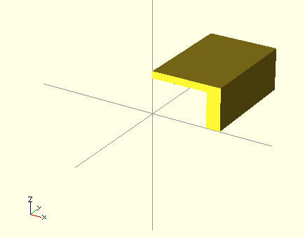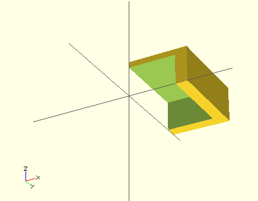
Close. Except because the origin of the cube is the corner (not the center), we also need to translate it to take into account the wall thickness.
difference() {
// Solid brick
cube([
x_units * unit_width,
y_units * unit_width,
unit_height]);
// Hollow brick
translate([1, 1, 0]) {
cube([
x_units * unit_width - wall_thickness * 2,
y_units * unit_width - wall_thickness * 2,
unit_height - wall_thickness]);
}
}
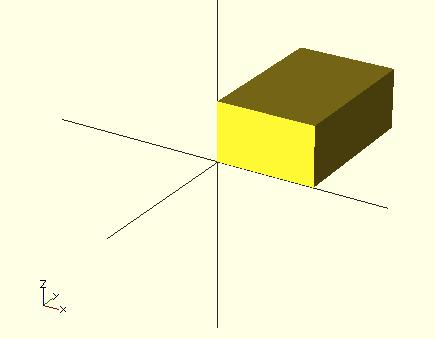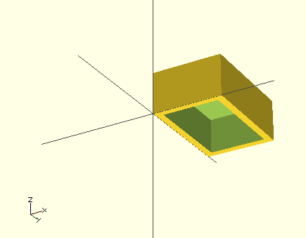